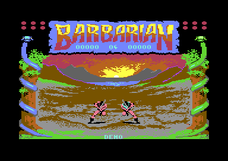
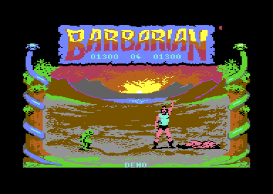
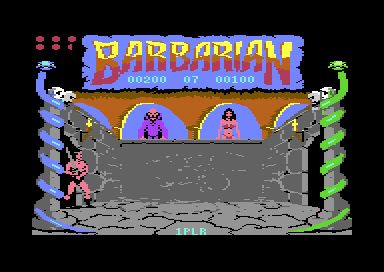
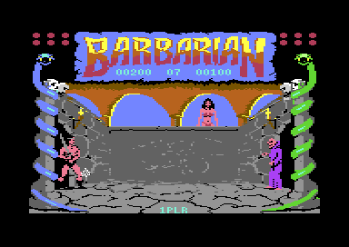
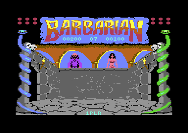
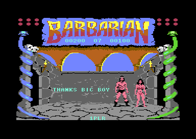

<meta charset="utf-8">
<meta name="viewport" content="width=device-width, initial-scale=1">
<title>Barbarian: The Ultimate Warrior</title>
<link rel="preconnect" href="https://fonts.googleapis.com">
<link rel="stylesheet" href="https://fonts.googleapis.com/css2?family=Lato:wght@400;700;900&family=IBM+Plex+Mono:wght@400;500&display=swap">
<style>
:root{
  --bg:#23262d; --paper:#e9e7e1; --surface:#ffffff; --surface-2:#f1efea; --line:#d5d3cc; --line-soft:#e0ded8;
  --ink:#2f3136; --ink-soft:#55585f; --ink-mute:#80838a;
  --link:#1f5fa8; --link-hover:#154480; --accent:#1f5fa8;
  --amber:#c25a00; --cyan:#1f5fa8; --coral:#d04a3a; --green:#2a8a4a; --violet:#4a5bd6; --hl:#fff0c2;
  --chip:#2f3136; --chip-ink:#ffffff;
  --c64blue:#40318d; --c64grey:#686868;
  --fd:'Lato',system-ui,sans-serif; --fb:'Lato',system-ui,sans-serif; --fm:'IBM Plex Mono',ui-monospace,Menlo,monospace;
  --col:1080px; --gx:68px; --fs:17px; --lh:1.6; --hw:900; --h1:46px; --h2:26px; --sy:48px; --pp:26px; --r:10px;
  --plate-shadow:0 1px 2px rgba(0,0,0,.05),0 4px 14px rgba(0,0,0,.05);
}
*{box-sizing:border-box}
html{background:var(--bg);min-height:100%}
body{background:var(--paper);color:var(--ink);font-family:var(--fb);font-size:var(--fs);line-height:var(--lh);max-width:var(--col);margin:0 auto;min-height:100vh;padding:0 0 4rem}
h1,h2,h3{font-weight:var(--hw);letter-spacing:-.01em;text-wrap:balance;color:var(--ink);margin:0}
.wrap{padding:0 var(--gx)}
.hero{padding:48px var(--gx) 8px;text-align:left}
.eyebrow{font-family:var(--fm);font-size:12px;letter-spacing:.08em;text-transform:uppercase;color:var(--ink-mute);margin:0 0 10px}
.hero h1{font-size:var(--h1);line-height:1.15;letter-spacing:-.02em;margin:0 0 14px}
.hero .sub{margin:0 0 .6em;color:var(--ink-soft)}
section{padding:var(--sy) 0 24px}
section:last-of-type{border-bottom:none}
.fig{font-family:var(--fm);font-size:12px;letter-spacing:.08em;text-transform:uppercase;color:var(--ink-mute);margin:0 0 10px}
h2.t{font-size:var(--h2);margin-bottom:12px}
.lede{color:var(--ink-soft);margin:0 0 30px}
.plate{background:var(--surface);border:1px solid var(--line);border-radius:var(--r);padding:var(--pp);box-shadow:var(--plate-shadow)}
.cap{font-size:14px;color:var(--ink-mute);margin-top:14px;line-height:1.55}
.cap b{color:var(--ink);font-weight:700}
code{font-family:var(--fm);font-size:.82em;background:var(--chip);color:var(--chip-ink);border-radius:4px;padding:2px 6px;overflow-wrap:break-word;-webkit-box-decoration-break:clone;box-decoration-break:clone}

.bb-cv{display:block;width:100%;height:auto;image-rendering:pixelated;background:#000;border-radius:4px}
.bb-stack{position:relative}
.bb-stack canvas+canvas{position:absolute;left:0;top:0;width:100%;height:100%;background:transparent;pointer-events:none}
.bb-bar{display:flex;flex-wrap:wrap;gap:8px;margin:0 0 14px;align-items:center}
.bb-btn{font:inherit;font-family:var(--fm);font-size:12.5px;background:var(--surface);border:1px solid var(--line);border-radius:6px;padding:5px 11px;color:var(--ink);cursor:pointer;line-height:1.3}
.bb-btn:hover{border-color:var(--ink-mute)}
.bb-btn[aria-pressed="true"]{background:var(--accent);border-color:var(--accent);color:#fff}
.bb-out{font-size:15px;color:var(--ink);margin:12px 0 0;min-height:3em;line-height:1.55}
.bb-out b{font-weight:700}
.bb-pics{display:grid;grid-template-columns:minmax(0,1fr) minmax(0,1fr);gap:14px}
.bb-pics figure{margin:0}
.bb-pics img{display:block;width:100%;height:auto;image-rendering:pixelated;border-radius:4px}
.bb-pics figcaption{font-size:13px;color:var(--ink-mute);margin-top:6px;line-height:1.45}
.bb-tbl{border-collapse:collapse;font-size:14px;width:100%;margin:4px 0 0}
.bb-tbl th,.bb-tbl td{text-align:left;vertical-align:top;padding:5px 8px;border-bottom:1px solid var(--line-soft)}
.bb-tbl th{font-weight:700;color:var(--ink-soft)}
.bb-tbl td.bb-n{font-family:var(--fm);font-size:13px;white-space:nowrap}
.bb-tbl tr.bb-warn td{background:var(--hl)}
.bb-wrapx{overflow-x:auto}
.bb-sticks{display:grid;grid-template-columns:repeat(2,minmax(0,1fr));gap:18px;margin:16px 0 0}
.bb-sticks h3{font-size:14px;font-weight:700;color:var(--ink-soft);margin:0 0 6px}
.bb-grid{display:grid;grid-template-columns:repeat(3,minmax(0,1fr));gap:5px}
.bb-grid button{font:inherit;font-size:12.5px;line-height:1.25;background:var(--surface-2);border:1px solid var(--line);border-radius:6px;padding:6px 4px;cursor:pointer;color:var(--ink);min-height:52px}
.bb-grid button i{display:block;font-style:normal;font-family:var(--fm);font-size:15px;color:var(--ink-mute)}
.bb-grid button[aria-pressed="true"]{background:var(--accent);border-color:var(--accent);color:#fff}
.bb-grid button[aria-pressed="true"] i{color:#fff}
.bb-replies{display:grid;grid-template-columns:repeat(8,minmax(0,1fr));gap:4px;margin:10px 0 0}
.bb-replies span{font-size:12px;text-align:center;background:var(--surface-2);border:1px solid var(--line-soft);border-radius:5px;padding:4px 2px;line-height:1.25}
.bb-replies span b{display:block;font-family:var(--fm);font-size:11px;font-weight:500;color:var(--ink-mute)}
.bb-replies span i{display:block;font-style:normal;font-family:var(--fm);font-size:15px}
.bb-replies span.on{background:var(--amber);border-color:var(--amber);color:#fff}
.bb-replies span.on b{color:#fff}
.bb-picks{display:grid;grid-template-columns:repeat(16,minmax(0,1fr));gap:3px;margin:10px 0 0}
.bb-picks span{font-family:var(--fm);font-size:12px;text-align:center;background:var(--surface-2);border:1px solid var(--line-soft);border-radius:4px;padding:3px 0;line-height:1.3}
.bb-picks span.on{background:var(--amber);border-color:var(--amber);color:#fff}
.bb-sw{display:inline-block;width:12px;height:12px;border-radius:2px;vertical-align:-1px;margin-right:6px;border:1px solid rgba(0,0,0,.25)}
.bb-bars{display:inline-flex;gap:2px;align-items:flex-end;height:28px;vertical-align:middle}
.bb-bars i{display:block;width:10px;background:var(--accent);border-radius:1px;min-height:1px}
.bb-range{width:100%;max-width:340px;accent-color:var(--accent)}
.bb-field{display:flex;flex-wrap:wrap;gap:8px 14px;align-items:center;font-size:14px;margin:0 0 12px}
.bb-field label{color:var(--ink-soft)}
.bb-field select{font:inherit;font-size:14px;padding:3px 6px;border:1px solid var(--line);border-radius:6px;background:var(--surface);max-width:100%}
.bb-mono{font-family:var(--fm);font-size:13px}
.bb-sub{font-size:14px;font-weight:700;color:var(--ink-soft);margin:16px 0 0}
@media (max-width:720px){:root{--gx:16px;--h1:34px;--pp:16px}.bb-pics,.bb-sticks{grid-template-columns:1fr}.bb-picks{grid-template-columns:repeat(8,minmax(0,1fr))}.bb-replies{grid-template-columns:repeat(4,minmax(0,1fr))}}
</style>
<!-- tabs -->
<header class="hero">
  <p class="eyebrow">1987 · Palace Software</p>
  <h1>Barbarian: The Ultimate Warrior</h1>
  <p class="sub">Five times a second the game paints both barbarians into a band of the background picture. The computer's fighter takes its choices from a list of 32, always in the same order, so it fights in a cycle that repeats every 6.4 seconds.</p>
</header>
<main class="wrap">

<section id="game" data-part="practice">
  <p class="fig">01 · The game</p>
  <h2 class="t">Two barbarians and a sword each</h2>
  <p class="lede">A fighting game for one player against the computer or two against each other, in which a well-timed blow takes the other fighter's head off.</p>
  <div class="plate">
    <div class="bb-pics">
      <figure><figcaption>Side 1 of the disk: the demo fight in front of the volcano.</figcaption></figure>
      <figure><figcaption>After a head comes off, a goblin kicks it away and drags the body off.</figcaption></figure>
    </div>
  </div>
  <p>Each fighter has twelve points of strength, shown as six half circles in the panel above the arena. A blow that lands takes one point. When a fighter has none left, he falls dead. One blow ends a fight at once at any strength: the flying neck chop, timed right, cuts off the other fighter's head.</p>
  <p>The disk has two sides, and each loads on its own. Side 1 is practice: one player against the computer, or two players against each other with 90 seconds on the clock. Side 2 is the tournament: one player fights eight of the evil sorcerer Drax's warriors in turn, each better than the last, then faces Drax himself to free Princess Mariana. Both sides run the same program, and side 2's copy adds the code for the ending.</p>
</section>

<section id="moves" data-part="practice">
  <p class="fig">02 · The moves</p>
  <h2 class="t">Sixteen moves on one joystick</h2>
  <p class="lede">The joystick has nine positions and a fire button. Each position starts one move without fire and another with it. Press a square to hold the joystick there.</p>
  <div class="plate">
    <div class="bb-bar" id="bb-move-bar"></div>
    <canvas id="bb-move" class="bb-cv" width="320" height="128"></canvas>
    <p class="bb-out" id="bb-move-out"></p>
    <div class="bb-sticks">
      <div><h3>Joystick alone</h3><div class="bb-grid" id="bb-stick-free"></div></div>
      <div><h3>Joystick with fire</h3><div class="bb-grid" id="bb-stick-fire"></div></div>
    </div>
    <div class="bb-field" style="margin:16px 0 0"><label for="bb-move-pick">Or play any of the game's 30 moves</label><select id="bb-move-pick"></select></div>
    <p class="cap">The game's own code, running on the page: each pass reads the joystick (<code>read_stick</code>, <code>$84C1</code>), then moves the fighter one frame on and draws it as the game's main loop does (<code>main_loop</code>, <code>$80BB</code>), five passes a second. The screen is the game's own picture of the volcano, from the listing, with the other fighter left out. Forward is towards the other fighter, so the left-hand fighter's forward is right and the right-hand fighter's is left.</p>
  </div>
  <p>The game picks a move from a row of nine, one for each position of the joystick (<code>move_rows</code>, <code>$CD3A</code>). Which row it uses depends on the move under way and on the fire button (<code>stick_row</code>, <code>$8508</code>). A standing fighter uses row 0 without fire and row 8 with it, the two grids above. A crouching fighter uses another row, so he can stand up or swing low but not jump.</p>
  <p>Standing and the two walks give way at once to whatever the joystick says next. Every other move holds on until its last frame, whatever the joystick does (<code>stick_to_move</code>, <code>$853B</code>). A swing of the sword is a commitment of four or five frames, nearly a second.</p>
  <p>The list has 30 moves, more than the joystick starts. The others are started by the game: the recoil and the fall after a blow lands, the fall to death, the headless body, the victory, the taunt of a fighter left alone, and the turn when one fighter rolls past the other. One move, number <code>$95</code>, is never started at all (<a href="discoveries.html#unused-frames">Discoveries</a>).</p>
</section>

<section id="music" data-part="practice">
  <p class="fig">03 · The title tune</p>
  <h2 class="t">Music: six minutes before it repeats</h2>
  <p class="lede">Richard Joseph's title tune plays when F3 is pressed. It runs for 6 minutes 16 seconds before it starts again, and two of its five parts are also the music for a fight.</p>
  <div class="plate">
    <div id="bb-music"></div>
    <p class="cap">The game's own sound driver, running on the page over the bytes in the listing and called as the game calls it, from two timers: the sequencer (<code>sound_tick</code>, <code>$97F4</code>) at the tune's tempo, the effects and the copy into the sound chip (<code>effects_tick</code>, <code>$9D73</code>) 98.5 times a second. Each routine runs to its end before the other starts. <code>test_music.js</code> holds each button to the game's code over the listing's whole memory, every write to the sound chip in order, for 60 seconds of each.</p>
  </div>
  <p>The driver plays three voices, and each reads its own sequence: notes, their lengths, and commands to wait, repeat, jump to another sequence or call one and come back, change the instrument, the tempo or the filter (<code>do_command</code>, <code>$98EE</code>). A tune is three sequence numbers, one for each voice. The title tune is <code>$80</code>, <code>$81</code> and <code>$82</code>.</p>
  <p>The tune has five parts, and each part's three sequences end by asking for the next three (command <code>$F5</code>). The fourth part, <code>$89</code> to <code>$8B</code>, is the music the game plays as the two fighters walk on (<code>walk_on</code>, <code>$8358</code>). The fifth, <code>$D4</code> to <code>$D6</code>, plays while the goblin drags a body off (<code>goblin_drags</code>, <code>$9576</code>). After the fifth comes <code>$80</code> again.</p>
  <p>The note table holds 192 quarter tones (<code>note_freqs</code>, <code>$9D94</code>), and its numbers fit an American NTSC machine's clock: each semitone is within 10 cents of true pitch at 1,022,727 Hz. A European PAL machine runs at 985,248 Hz, so it plays the whole tune 65 cents flat, about two thirds of a semitone. The player above plays it as a PAL machine does.</p>
</section>

<section id="frame" data-part="practice">
  <p class="fig">04 · One frame</p>
  <h2 class="t">The fighters are painted into the picture</h2>
  <p class="lede">The screen is one bitmap picture, and the fighters are drawn into a band of it. The C64's sprites, which float over the picture, carry only what the band cannot: the parts of a fighter that rise above it, the blood, the rolling head, the goblin and the right-hand fighter's coloured clothes.</p>
  <div class="plate">
    <div class="bb-bar" id="bb-frame-bar"></div>
    <div class="bb-stack"><canvas id="bb-frame" class="bb-cv" width="384" height="272"></canvas><canvas id="bb-frame-hi" class="bb-cv" width="384" height="272"></canvas></div>
    <p class="bb-out" id="bb-frame-out"></p>
    <p class="cap">One frame of side 1's demo, drawn by the page from the memory and the video chip's registers that VICE held for it, with the changes the game made during it. It matches VICE's own picture of the same frame in all 104,448 pixels.</p>
  </div>
  <p>Each fighter is drawn from blocks of 63 bytes, nine to a frame in three rows of three, stored the way sprite shapes are stored (<code>compose_frame</code>, <code>$88E3</code>). The game builds the frame in a buffer, flips it through a table for a fighter facing left (<code>mirror_compose</code>, <code>$892C</code>) and draws it into a copy of the band through a mask, so that the background shows round the fighter (<code>draw_fighter</code>, <code>$8A10</code>). The band is 32 characters wide and 8 tall, 2,560 bytes of the bitmap.</p>
  <p>Each pass of the main loop starts from a clean copy of the band, kept since the backdrop was set up (<code>clear_strip</code>, <code>$8B2E</code>). It draws both fighters into it, then copies the whole band into the picture (<code>show_strip</code>, <code>$8B64</code>). The loop never waits for the screen, so this work sets its pace: a pass takes about ten frames of the screen's fifty a second, and the fighters move five times a second.</p>
  <p>A frame of a fighter also names up to four sprites to lay over it (<code>place_overlays</code>, <code>$8E83</code>). Most are the parts of a fighter that rise above the band: the top of the head, a fist, the raised sword. The right-hand fighter also wears one sprite as a body piece in the skill level's colour, which is how the computer's warriors look different from each other.</p>
</section>

<section id="blows" data-part="practice">
  <p class="fig">05 · The blows</p>
  <h2 class="t">A blow lands on a pose at a distance</h2>
  <p class="lede">A blow is one frame of an attacking move. It lands when the other fighter shows one of the poses its list names and stands at a distance its record reaches.</p>
  <div class="plate">
    <div class="bb-bar" id="bb-blow-bar"></div>
    <div class="bb-out" id="bb-blow-head"></div>
    <div class="bb-wrapx"><table class="bb-tbl" id="bb-blow-tbl"></table></div>
    <p class="cap">Read from the tables in the listing: <code>attack_poses</code> (<code>$C1B0</code>), <code>hit_lists</code> (<code>$C1BC</code>) and the 39 records of <code>hit_records</code> (<code>$C69C</code>). The distance is in columns of 8 pixels between the two fighters. The rows marked in yellow name a pose a second time, and the game reads that second record from the wrong place (<a href="discoveries.html#hit-record-bug">Discoveries</a>).</p>
  </div>
  <p>Twelve poses are blows (<code>attack_poses</code>). Each pass the game looks up the attacker's pose there, then walks through that blow's list of pairs: a pose the victim may be in, and a record (<code>hit_test</code>, <code>$8662</code>). For the first pair that names the victim's pose, the record's first byte says at which distances the blow reaches, one bit for each distance from 0 to 7.</p>
  <p>The other three bytes say what happens. The victim recoils, is knocked down, loses his head, or nothing happens at all. One of five sounds plays. Most records take a point of strength, add points to the attacker's score and draw blood. A record that takes nothing but plays the clash of swords is a parry: the victim's own pose blocked the blow.</p>
  <p>Every record that hurts says one point, and the game takes one point whatever the record says (<code>hit_effect</code>, <code>$86F3</code>). So every blow is worth the same half circle of strength: a fighter dies on the twelfth blow that lands, and what the moves differ in is reach, speed and points.</p>
</section>

<section id="computer" data-part="practice">
  <p class="fig">06 · The computer's fighter</p>
  <h2 class="t">Thirty-two picks, in order</h2>
  <p class="lede">The computer's fighter has a joystick of its own. Five times a second it looks at your pose and the distance between you, and pushes the stick to one of eight replies.</p>
  <div class="plate">
    <div class="bb-field">
      <label for="bb-ai-level">Skill level</label><select id="bb-ai-level"></select>
      <label for="bb-ai-pose">Your pose</label><select id="bb-ai-pose"></select>
    </div>
    <div class="bb-field"><label for="bb-ai-dist">Distance</label><input type="range" id="bb-ai-dist" class="bb-range" min="0" max="39" value="2"><span class="bb-mono" id="bb-ai-dist-out"></span></div>
    <div class="bb-bar"><button type="button" class="bb-btn" id="bb-ai-next">Next pass</button><button type="button" class="bb-btn" id="bb-ai-run" aria-pressed="false">Run</button><button type="button" class="bb-btn" id="bb-ai-reset">Back to pick 0</button></div>
    <div class="bb-out" id="bb-ai-out"></div>
    <p class="bb-sub">The eight replies</p>
    <div class="bb-replies" id="bb-ai-replies"></div>
    <p class="bb-sub">The level's 32 picks, one a pass</p>
    <div class="bb-picks" id="bb-ai-picks"></div>
    <p class="cap">A port of <code>computer_moves</code> (<code>$8598</code>), reading its tables from the listing. <code>test_rules.js</code> holds it to the game's routine, run on the page's 6502 over the listing, for every level, pose and distance at one count and every level and count at a spread of poses and distances, 43,456 cases. A move is named as it starts from standing; from another move the same push of the stick can start a different one.</p>
  </div>
  <p>The opponent's pose picks a row of eight numbers (<code>ai_pose_rows</code>, <code>$C8CA</code>), and the distance picks one of them through eight distance classes (<code>distance_class</code>, <code>$C8A2</code>): one for each distance up to 4 columns, then 5 to 6, 7 to 13, and 14 or more. That number is a list of eight joystick positions (<code>ai_choices</code>, <code>$CA30</code>).</p>
  <p>Which of the eight it takes comes from the skill level's list of 32 picks (<code>ai_level_picks</code>, <code>$C792</code>), read at a counter that goes up by one on every pass. The counter is never reset or shuffled in a game, so the computer reads its 32 picks in order, over and over, every 6.4 seconds. The picks are sorted, so at every level the computer starts each cycle with its low-numbered replies and ends with its high-numbered ones. In the demo the counter is taken from two of CIA 1's timers instead, so the demo fighters pick at random.</p>
  <p>A pick that comes while the fighter is in the middle of a move is lost, because the move holds the stick until its last frame. What the computer does is the pick that comes on the first pass after each move ends.</p>
</section>

<section id="levels" data-part="practice">
  <p class="fig">07 · Skill levels</p>
  <h2 class="t">Higher levels pick attacks more often</h2>
  <p class="lede">A level changes two things: the colour of the computer's clothes and its list of picks. Its speed, reach and strength are the same at every level.</p>
  <div class="plate">
    <div class="bb-wrapx"><table class="bb-tbl" id="bb-level-tbl"></table></div>
    <p class="cap">From <code>level_colours</code> (<code>$C78A</code>) and <code>ai_level_picks</code> (<code>$C792</code>). The bars count how many of the level's 32 picks take each reply, 0 to 7.</p>
  </div>
  <p>Level 0 takes reply 6 or 7 on 22 of its 32 passes, and level 7 takes reply 0 or 1 on 22 of its. The lists put the attacks first and standing still or walking last. Close to a standing opponent, the list offers the overhead chop, the leg chop, the web of death, the neck chop and the body chop before standing still. Level 7 swings on all 32 passes, and level 0 stands still on 14.</p>
  <p>The panel shows the level in place of the two-player clock, <code>00</code> to <code>07</code>. A win in a one-player game moves up a level and over to the side's other arena, and side 1 stops at level 7 (<code>walk_off</code>, <code>$83FA</code>; <a href="levels.html#bouts">Maps / levels</a>). On side 2 the win at level 7 is the last fight before Drax.</p>
</section>

<section id="ending" data-part="tournament">
  <p class="fig">08 · The ending</p>
  <h2 class="t">Drax throws stars</h2>
  <p class="lede">Side 2's eighth bout, at level 7, is fought in the hall of arches, with Drax and Mariana painted into its arches. Win it, and Drax steps out of the left-hand arch to throw stars while the barbarian crosses the arena to reach him.</p>
  <div class="plate">
    <div class="bb-pics">
      <figure><figcaption>The hall of arches. Drax and Mariana are part of the picture, painted into the arches.</figcaption></figure>
      <figure><figcaption>Drax has stepped out: his arch is painted over and he is now sprites, throwing a star.</figcaption></figure>
      <figure><figcaption>A star that is not dodged kills at once.</figcaption></figure>
      <figure><figcaption>The end of the game, a few seconds before it goes back to the demo.</figcaption></figure>
    </div>
    <p class="cap">Screenshots from VICE, side 2, after a win at level 7.</p>
  </div>
  <p>Drax and Mariana are part of the picture until they move. When Drax steps out, the game swaps a 4 by 4 character block of the bitmap with a store of plain light blue (<code>swap_cells_13</code>, <code>$8D5B</code> on side 2), and swaps 13 sprite shapes in from under the system ROM, where they wait (<code>swap_shape_bank</code>, <code>$8E01</code>). Drax is then four sprites at the right of the arena.</p>
  <p>Each time no star is in flight, Drax throws one, high or low, picked by the lowest bit of the video chip's raster line (<code>drax_throws</code>, <code>$84BD</code>). When the star reaches the barbarian, his move decides (<code>star_strikes</code>, <code>$8522</code>). A crouch, a leg chop or a roll lets a high star pass over him, and a jump clears a low one. Anything else, and he falls dead and the screen says YOUR END HAS COME. A crouch counts only once he is down: a star that arrives while he is still going down kills him.</p>
  <p>Once the barbarian reaches column 28, Drax vanishes (<code>reach_drax</code>, <code>$8572</code>). There is no fight with Drax himself. The barbarian walks back to his mark to the walk-on tune, Mariana steps down from her arch, he walks over to her and raises his sword, and THANKS BIG BOY appears. Five seconds later the game goes back to the demo.</p>
</section>

<section id="keys" data-part="practice">
  <p class="fig">09 · The keys</p>
  <h2 class="t">What the keys do</h2>
  <p class="lede">The keyboard is read once a pass, a row of keys at a time, through CIA 1, the chip the joysticks share (<code>read_keys</code>, <code>$9246</code>).</p>
  <div class="plate">
    <div class="bb-wrapx"><table class="bb-tbl">
      <tr><th>Key</th><th>What it does</th></tr>
      <tr><td class="bb-n">F1</td><td>Stops the demo and sets up a game. On side 1, holding it switches between one and two players. On side 2 it always sets one.</td></tr>
      <tr><td class="bb-n">F3</td><td>Fades the sound out, switches between the title tune and the fight's sound effects, and fades back in. While the tune plays, the effects that would take its voices are dropped.</td></tr>
      <tr><td class="bb-n">F5</td><td>Pauses, and F5 again carries on. The second press has to be let go within a pass, about a fifth of a second: still held at the next pass, it pauses the game again.</td></tr>
      <tr><td class="bb-n">F7</td><td>Starts the game that F1 set up.</td></tr>
      <tr><td class="bb-n">Q</td><td>Quits to the demo.</td></tr>
      <tr><td class="bb-n">CTRL and V</td><td>Prints a message in the arena for as long as V is held (<a href="discoveries.html#hello-claire">Discoveries</a>).</td></tr>
    </table></div>
    <p class="cap">From <code>read_keys</code>, side 1. Side 2's copy is the same apart from F1.</p>
  </div>
</section>

<section id="sound" data-part="practice">
  <p class="fig">10 · The sound effects</p>
  <h2 class="t">Sound: every effect is a short tune</h2>
  <p class="lede">The sound effects are sequences for the same driver as the music. A blow, a clash or the goblin's kick asks for one sequence on each of up to three voices.</p>
  <div class="plate">
    <div id="bb-sfx"></div>
    <p class="cap">The game's own sound driver, as in the title tune's player above, with each effect asked for as the game asks for it in a fight. The four marked unused are sequences in the driver's list that nothing in the game asks for.</p>
  </div>
  <p>A swing of the sword asks for its sound when the move reaches a set frame (<code>move_sound_moves</code>, <code>$C775</code>): the web of death, the body chop, the neck chop, the overhead chop and the leg chop all use sequence <code>$DD</code>, the flying neck chop its own, <code>$DE</code>. A blow that lands asks for one of four hit sounds through its record (<code>hit_sounds</code>, <code>$C738</code>), and the knocked-down fighter's fall has its own. On side 2, Drax's star uses the swing's sequence on all three voices.</p>
</section>

</main>
<footer style="margin:16px 0 0;padding:22px var(--gx) 0;border-top:1px solid #e0ded8;font-family:'IBM Plex Mono',ui-monospace,Menlo,monospace;font-size:12px;color:#80838a"><a href="https://github.com/gamesexplained/gamesexplained" style="color:#1f5fa8;text-decoration:none">GitHub</a> · <a href="https://discord.gg/3V9GWyRDWV" style="color:#1f5fa8;text-decoration:none">Discord</a><br>© Games Explained contributors. Write-ups, facts and symbol maps are available under <a href="https://creativecommons.org/licenses/by-sa/4.0/" style="color:#1f5fa8;text-decoration:none">CC BY-SA 4.0</a>; code under <a href="https://opensource.org/licenses/MIT" style="color:#1f5fa8;text-decoration:none">MIT</a></footer>
<script src="../../lib/c64.js"></script>
<script src="../../lib/sid.js"></script>
<script src="../../lib/cpu6502.js"></script>
<script>
/* bb-music */
// createDriver for C64Sid: runs the game's own sound driver on the kit's 6502 (C64Cpu, from
// ../../lib/cpu6502.js, which sid.js passes to createDriver), its code and tables taken from side
// 1's listing over BB_DRIVER_RANGES. The game calls it from two of CIA 1's timers (irq, $93A5):
// timer B runs sound_tick ($97F4), the sequencer, every latch + 1 cycles ($5161 as restart sets
// it, then whatever a tune's tempo command, $F6, writes to $DC06-$DC07, from the period after the
// write), and timer A runs effects_tick ($9D73), the voices' effects and the copy of the shadow
// registers into the chip, every 10,001 cycles. One play() is BB_STEP cycles: it runs each routine
// whose timer runs out inside them, sound_tick first when both are due, as irq takes them. Each
// routine runs whole. On the machine an interrupt of timer A that comes while sound_tick runs finds
// the sequencer busy ($98) and returns, but leaves its flags in $97, so the interrupted irq runs
// effects_tick as soon as sound_tick ends: the same order as here, a little later. init(t) puts
// back the driver's bytes as loaded, clears the sound as silence ($9D47) does and asks each voice
// for its sequence (sound_requests, $DD-$DF). The title tune is asked for as F3 asks (read_keys):
// sound_mode ($B8) negative and a fade in from silence ($E1 = $81); the rest as a fight asks,
// sound_mode 0 and the volume ($E0) at 15, where the fade in at the start of the game leaves it.
// A read of a SID register returns the data bus, the last value written.
const BB_STEP = 1000;
const BB_DRIVER_RANGES = [[0x0031, 0x0049], [0x0098, 0x0098], [0x00B8, 0x00B8], [0x00CF, 0x00EE],
  [0x0200, 0x0259], [0x97F4, 0xA550], [0xCDA6, 0xCDB0], [0xED80, 0xFC03]];
const BB_TUNES = [
  { name: 'Title tune', tracks: [0x80, 0x81, 0x82], title: true },
  { name: 'Walk-on', tracks: [0x89, 0x8A, 0x8B] },
  { name: "The goblin's drag", tracks: [0xD4, 0xD5, 0xD6] },
];
const BB_EFFECTS = [
  { name: 'Swing', tracks: [0xDD, 0xDD, 0] },
  { name: 'Flying neck chop', tracks: [0xDE, 0xDE, 0] },
  { name: 'A blow lands', tracks: [0xE9, 0, 0xEA] },
  { name: 'Clash', tracks: [0xDA, 0xDB, 0xDC] },
  { name: 'Head off', tracks: [0xE1, 0xE1, 0] },
  { name: 'Head butt', tracks: [0xEE, 0xEE, 0] },
  { name: 'Knocked down', tracks: [0xD7, 0xD7, 0] },
  { name: 'The head bounces', tracks: [0xDF, 0, 0] },
  { name: 'The goblin kicks the head', tracks: [0xEB, 0xEB, 0xEB] },
  { name: 'The goblin grabs the body', tracks: [0xE2, 0, 0] },
  { name: "Drax's star", tracks: [0xDD, 0xDD, 0xDD] },
  { name: 'Unused $E0', tracks: [0xE0, 0, 0] },
  { name: 'Unused $EF', tracks: [0xEF, 0, 0] },
  { name: 'Unused $F0', tracks: [0xF0, 0, 0] },
  { name: 'Unused $F1', tracks: [0xF1, 0, 0] },
];
function createDriver(D, C64Cpu) {
  const STEP = D.step, PERIOD_A = 10001;
  const base = new Uint8Array(0x10000);
  for (const [ad, bytes] of D.mem) base.set(bytes, ad);
  const sid = new Uint8Array(25);
  let m, cpu, writes = [], bus = 0, now = 0, tA = 0, tB = 0, latch = 0x5161;
  const io = {                                                  // the chips at $D000-$DFFF
    read(ad) { if (ad >= 0xD400 && ad < 0xD800) return bus; throw new Error('read $' + ad.toString(16)); },
    write(ad, val) {
      if (ad >= 0xD400 && ad < 0xD800) { const r = ad & 0x1F; if (r < 25) { sid[r] = val; writes.push(r, val); } bus = val; return; }
      if (ad === 0xDC06) { latch = (latch & 0xFF00) | val; return; }      // the tempo (cmd_tempo)
      if (ad === 0xDC07) { latch = (latch & 0x00FF) | val << 8; return; }
      throw new Error('write $' + ad.toString(16));
    },
  };
  const run = (ad) => cpu.call(ad, { a: 0, x: 0, y: 0 }, { maxSteps: 100000 });
  const busy = () => [0, 1, 2].some((v) => (m[0x0251 + v] | m[0xDD + v]) & 0x80);
  return {
    sid,
    get writes() { return writes; },
    init(t) {
      const c = D.tunes[t];
      m = base.slice(); cpu = new C64Cpu.CPU(m, { port: 0x35, io });
      sid.fill(0); bus = 0;
      run(0x9D47);                                              // silence
      writes = [];
      if (c.title) { m[0xB8] = 0x80; m[0xE1] = 0x81; } else { m[0xB8] = 0; m[0xE0] = 15; }
      c.tracks.forEach((n, v) => { if (n) m[0xDD + v] = n; });
      latch = 0x5161; now = 0; tA = 0; tB = 0;
    },
    stop() { run(0x9D47); writes = []; },
    play() {
      writes = [];
      const end = now + STEP;
      while (Math.min(tA, tB) < end) {
        if (tB <= tA) { const p = latch + 1; run(0x97F4); tB += p; }     // sound_tick
        else { run(0x9D73); tA += PERIOD_A; }                            // effects_tick
      }
      now = end;
    },
    playing: busy,
    voice(x) { const n = m[0x0251 + x]; return { seq: n & 0x80 ? m[0x0254 + x] : 0 }; },
  };
}
// end of bb-music
</script>
<script>
/* bb-frame */
// One frame of side 1's demo, the goblin dragging the loser off, as kit/c64/frame.py recorded it
// in VICE and trimmed it: the registers at its start, the writes during it, the colour RAM and the
// bytes the drawing reads.
const BB_FRAME = {"schema":1,"standard":"PAL","lines":312,"cycles":63,"about":"","vic":[248,192,0,0,0,0,103,184,103,205,224,141,200,141,216,173,0,59,0,0,0,248,216,0,25,112,241,0,120,0,231,255,240,240,241,242,243,240,250,242,240,241,245,245,252,252,243],"cia2":[78,243],"cpu":[47,53],"writes":[[115,61,53281,249,9],[251,21,53281,240,0],[253,36,53256,104,104],[254,1,53254,104,104]],"colour":"AgICAgICAQgOAAcOAA4HBw4OBw4ABwcHBw4HDgcHAA4HDgICAgICAgICAgICAg4OBwgICAgHBwcHBwcHCAcHBwcHBwgHBwcOBwACAgICAgIODg4OAQAADggHDgcOBwcHCAgOBwgHBwgIBwcOCA4HDgcOAAAFBQUFDg4ODgEADg4CAg4CDgICAgIODgICCAICAgIOCAgOAg4IAAAABQUFBQ4ODg4BDg4CCAICAg4OAg4CDgIOAgIODgIOAg4OAggCAg4AAAUFBQUODg4OCwAADg4CAg4DAwMDAw4OAwMODgMDAwMDDgIODg4AAAAFBQUFAA4MDAAFAAACAA4OBQkFAgAAAAQAAgAADg4ODgACAA4OAAAABQwODgADBQAAAgIFAgICAgICCAIEAgICCAgICAQEBAgIAgQCAgUFBQsADgAABQ4ABQQCAgICAgQLBAgIAggICAcICAgEBAQCCAIICAgIBAIOAAUAAAkDAwUEAgkCAgQLCwsICAgIBwgHCAcHCAcICAILBAgCCQIJCwsJAAAJCQULBQsLBAgLCwQLCAgICAgHBwcHBwgICwgIBAQECwkJCQkJCQAABQkJBQsJDAsEBAsEBAwMCwoHAQcBCwsHCQILBAQEBAkJBAkJAAkAAAsICAUJDgQFDAULBAsLDAwMDg4ICw4ODg4JCQsJCQkJCQUMCAkLAAAOAwgMBQkMDgkFDAkJDg4JBA4JDg4ODA4MBQwJBQwMDA4MDAUIBQAACwsLCgoKCgoKCgoKCgoKCgoKCgoKCgoKCgoKCgoKCgoKCgoLBQkAAAgJCAoKCgoKCgoKCgoKCgoKCgoKCgoKCgoKCgoKCgoKCgoKCwgAAAsOCQwKCgoKCgoKCgoKCgoKCgoKCgoKCgoKCgoKCgoKCgoKCg4ICQALDg4ACgoKCgoKCgoKCgoKCgoKCgoKCgoKCgoKCgoKCgoKCgoICA4LAA4IDAoKCgoKCgoKCgoKCgoKCgoKCgoKCgoKCgoKCgoKCgoKBQgFAAAACwMKCgoKCgoKCgoKCgoKCgoKCgoKCgoKCgoKCgoKCgoKCgsJCQAJCQgLCgoKCgoKCgoKCgoKCgoKCgoKCgoKCgoKCgoKCgoKCgoICAkADggIDgoKCgoKCgoKCgoKCgoKCgoKCgoKCgoKCgoKCgoKCgoKCAkJCwsOCQgIDgkFBQUFCQkJBQkFBQkFBQkJCQUFBQUMBQUJDg4OCAkMCwAJDgsODgUFDgUMDgUMDA4FBQ4ODg4ODgUMDA4MDg4ODg4ODgwOBQULAAAJDgUODgwDDg4ODgUMDAwMAwMDAwwFDAwMDA4ODg4MBQUFCwkJAAcHBwcHBwcHBwcHBwcHBwcHBwcHBwcABg==","ram":[{"a":17408,"b":"AAAAAAAA4OdwfuiA54eOjggH4IB+4ODgDgfgcOAOnofgsAAAAAAAAAAAAAAAAAt46H5+zueOjo6Ojo6O546Ojo6O6H7o6C6Hvp4AAAAAAABzc3NzIB4ewgeOh46Hjo6OfueHjueOjud+jo6H54eOh46QnHx9fX19c3NzcyDrsAuAjoKOKOiO6OiCAuiO4o7oh+iCLuKCjoIu6+F9fX19fXNzc3OwsFAOAo7ojgICPiM+Aj4jDg4CIw4CDjIgDi4I6JDhV319fX1zc3NzMBu+kiCOjgLg4ODg4CMP4OAvwuDg4ODgDHCAICDrkYx9fX19TlBQBSUQHuLgLiDwDuAO4L5OTuBODk5OkAsLIJ7gviAgnkIlDVBQUL7gDMVeUFAgBEAIQEBAAggCBEAIAgICAgICICACQAJAQCACAlBcUFtb6zXlICVISEhISCspKCRCSEIvLygnJySCgiiEQkhCQkJCUlsFU0u1WVue674pSSRISyssgoInJCfX+Pf497hYV1i3QkjIKCRJQkklU5VblVlQhZ7plEmJmyskdMuMvOfHp1dY+PjIyH97jLzLi5iYlEIkW7VYBVm5mAVYm8m8uUmbm8TLvJu4ioe4eAGHh3iLuLnEm7mSm8S0m1SFlYWb6+m5yclelVlJlJRJuUmctbKwuLixjou8y5u0tEnFQlReXp6VybhZW747686VyVyVXMWclVxFlElOnpM+OTlZ6ZyVmFlcyVmVXlxeXshTs1tZlenswMDAwMDAwMDAwMDAwMDAwMDAwMDAwMDAwMDAwMDAwMDFm1uVWQlYwMDAwMDAwMDAwMDAwMDAwMDAwMDAwMDAwMDAwMDAwMDAjFmYlQmYiwjAwMDAwMDAwMDAwMDAwMDAwMDAwMDAwMDAwMDAwMDAwIy5CLnpk4mMwMDAwMDAwMDAwMDAwMDAwMDAwMDAwMDAwMDAwMDAwMAMuVmV67M+jsDAwMDAwMDAwMDAwMDAwMDAwMDAwMDAwMDAwMDAwMDAyDU7W8mb6evAwMDAwMDAwMDAwMDAwMDAwMDAwMDAwMDAwMDAwMDAwFO1sJsLgLnIwMDAwMDAwMDAwMDAwMDAwMDAwMDAwMDAwMDAwMDAwMDLyQibuZ7JyMDAwMDAwMDAwMDAwMDAwMDAwMDAwMDAwMDAwMDAwMDAzsiAleC5jpzOXM7sycmcXFxcnFycnFycnFzFxZycnJxZnJzFwlwszoyJWVuAuY6VWcDsXOxeXM5eXsXOzlxcXFxcXOzl5VxeXFxcxcVcxVlZO7kJtbVbW+tbtVtcXFzFxexeXuXlwMDAwFvLpbX1tVxcXFzly7y5WbW1tQ=="},{"a":18427,"b":"R0gsK3U="},{"a":19136,"b":"AAAAAAAAAAAAAAAAAAAAAAAAAAAAAAAAAAAAAAAAAAAAAAAAAAAAAAAAAAAAACqqAKqqAAAAAAAAAAAAAAAA"},{"a":19200,"b":"AAAAAAAAAAAAAAAAAAAAAAAAAAAAAAAAAAAAAAAAAAAAAAAAAAAAAAAAAgAAqvIAqvoAAvIAAHAAADAAAPAA"},{"a":20928,"b":"AAAAAAAAAAAAAAAAAAAAAAAAAAAAAAAAAAAAAAAAAAAAAAAAAAIAAAqAACqgACmgAKlgAmqgApmgCqpQCqag"},{"a":20992,"b":"CpmAGpgAGmgAGmQAKmgAKaoAKaoAGaqAGaqACVqACmaAAmVAAmUAhmUAmqUAKaQAAJQAAJUAFqVAVagABVQA"},{"a":23872,"b":"ADAA8DAA8DAA/PAA//AA//wA//AAP/AAw8wAP/wAP/wA//wAP/wAz/AAP/AAz/AA//AAD8AAAAAAAAAAAAAA"},{"a":24576,"b":"VVVVVVVVVVVVVVVVVVVVVVVVVVVVVVVVVVVVVVVVVVVVVVVVVVVVVVVVVVVVVVVVAQUFFRUVFRVVVVVVVVVeXsD//////39XAKKoqqqqqqlVVVVVVVV5/f//////////QVVVVVVlamr//////9+vq6qqqqqqqr+/qqqqqqqqVf8A8/////+/7//////////qVFVVVVVVVf8AAP//////fwACAKqqqqqqAFFVVVVVVX8EVVVVVVVV3wRVVVVVVVX/AIqiqqqq+v4/////////+lRVVVVVVdXVAP/////99dUBVVVVVf39/YCqqqqqqr+/KiqKqqqqqqr/////////2lRVVVVVVVX1wPDw/Pz8/PxVV19fX19XVVVVVVVVVVVVVVVVVVVVVVVVVVVVVVVVVVVVVVVVVVVVVVVVVVVVVVVVVVVVVVVVVVVVVVVVVVVVVVVVVVVVVVVVVVVVVVVVVVVVVVVVVVVVVVVVVVVVVVU/Pw8PAwADA/n9/v7+////////+/r5/f1VVVf/+6urq1ZW1lZWVlZWqqqqqqqrq6vq6unpqa2lpf5+/n5+fn5+n6etn5+fn5///39paWlpafr+/v7+/v7+n5efn5+fn5///2lra2trZ9r29vb29vb2V1ZeWlp6enr//ffn56enp+fl5+fr6+vr//9f2tra2tr+//9/f39/f5+fn5+fn5+f1dXV1VVWVlbV1tbWVl5aWv29vb29vb29v7+/v7+vr2+qqurq6urq6tpaampqaupq+vr6+vr6+vqoqKCggACAgFVVVVVVVVVVVVVVVVVVVVVVVVVVVVVVVVVVVVVVVVVVVVVVVVVVVVVVVVVVVVVVVQAAAAAAAAAAAAAAAAAAAAAAAAAAAAAAAAAAAAAAAAAAAAAAAAAAAAAAAAAAAAAAAAIKCgoKCioq///////////r6+vq6urq/qmpqalnb1/1q6ura6evn3+pqamrp6Wlpa+vr56+elVVfn7+/lZWVlafn5+Xl5WVlWtnX33/VWlpXnrq6mpa1v56en5/f39/f3aaqqpZtf391tpqqmpqWlZ6eXl5e3p7f6evr69/1VVV6+vr6WVlZWW1t7666v/19Vdeevpa1vX/n5+fnZWVlZWpqamrq6enpa+vrZ6+uWVV6empqen5///a2tra2trW1erq6vr6+vpaampqaurq6dXq6urq6upqasDw8PDw8Pz8AAAAAAAAAAAAAAAAAAAAAAAAAAAAAAAAAAAAAAAAAAAAAAAAAAAAAAAAAAAAAAAAAAAAAwABAw8AACrq6ir/MAAAwPywhPzPAAAAAAAAAAAAAAAAAAAAAAAAAAAAAAAAPz8/Dw8PAwz//////////1VVVVVVVVVVVVVVVVV1bWv/f19XV1dXVqWVlZWdv7+/q6+/v39/f32pqf39/f39/ZWVl5+/v7+/lpbX19fX19epqa3t/f39/dXV5erq6urq///////+/vqprf39/ff391WW3v7+/v7+319aWlpaWlplZWVn7+/v76Wl9fX19fX1VdX///////9qfn9/f39/f/X15erq6urq/vrq6mpqamn9/f39uampqdXV1dnq6urqVlVVlZWVlbXV1dXV1dVVVerq6urq6urqVFRUUFBQQBAAAAAAAAAAAAAAAAAAAAAAAAAAAAAAAAAAAAM/DhI/8wAAqKurqP8MAAAAwABAwPAMAAAAAAADAwr/PwDA/Pz8A/DAAAAAAAAAAAAAAAAAAAAAAAAAAAAAAAAAAAAAAAA/Pz8/Pw8/P6qqqqqqqqur/////uqqqqrr6+uqqqqqqr///////f3/v7+////6+qq+vv7++v///6urq6u/////v7+/v7qqqqp9fX1d//////7+/u6qqqqq6ur6+vr////////+qqqqql1dXf3//////v766qqqqqqvv7+/qqqqqrq6uvr7////X19ff////////7+/uqqqqur6+rv7////v7+//vqqqqq+vv7+/v///1dXV1d/////v7+/v7+///+vraWpqampqqqq+v//////lZWV1dXV1dX8/Pz8/PD8/AAAAAAAAAAAAAAAAAAAAAAAAAAAAAAAAMAPAwAAAAAAoP/8AAM/Pz8wAAAAAADAwAMDAwMPDw8P/Pz8/PDw8PAAAAAAAAAAAAAAAAAAAAAAAAAAAAAAAAAAAAAAAAAAACooIgICAgAK/v7+/vr6+vpVVVVXVVVVVaqrr//////////+/v76+ur//////////1V13d3d3d11VXX1dXV1df1Vdd1ddV3ddVV13d3d3d11VXXd3d3d3XX/////////////////////VXXd3d3d3XVVddXV9f11df////////////////////9Vdd3d3d3ddVV19XV1dXX9VXXdXXVd3XVVdd3d3d3ddVV13d3d3d11////////////////////////////////VVVVVVXV1dV/f39/f39/f1QUREBAQABQAAAAAAAAAAAAAAAAAAAAAAAAAAAAAAAAAAAAAAAAAAA/Pz8/Dw8PD8DAwMDw8PDwCgoKCgoKCgrw8PDw8PDw8AAABAUAQQQFiKiAqKCqCigAAAAAiAAIqgAAAAAAAAAACgoKCioqAABaalVVVVVVAP/9VVVVUQAAVaqqqqqqCAD//////z8/AP//////8wAAqqqqqqoCAABVVVVVVQAAAKqqqqqqAgAAVVVVUUUBATCqqqqqqqogAKqqqqqqqgAAqqqqqqqoIABVVVUFFQUAAKqqqqqqAAAAqqqqqqgoAAOqqqqqqgoCAKqqqqqqqiAA//////z8wAD///8//z8PAP///////8AA///////wwACqqqqqKgIAAP9/VVVVVQQAqqqqqqqqigDV1f////MAAH9//////z8AoKCgoKioAAAAAAAAAAAAAgAACAgCAAgGMz8DPw//8DwAABBQAEEQUAUFBQUFBQUFUFBQUFBQUFD6+vr29vb2/VZWVlZWVlZVf1f/f3//9//rqqrqquv6qn3dVVVVV1VVqqpmVVVXV9eqv/9ff////6qqVVVVVVVVXf////////+q+////////9XV////////rv/////////+////////////////////qaqqqqruqrv9/f////+//lWaqqqqqqqqVf////////+r7/////////X////////6qqqqqqqquuqWqqqqqquuvqWpqqqqqvr6VZqqqqqqqupWaqqqqqqqqpWlqqqqqqqqqpVVVVVVVVWllVVVVVVdXamqqqqqqqqqqvv///////9VZaqqqqqqqq7/////////qur///////+qVVVVVVVVVW+/r++/ur//v/3/////v/+WVVVWVZZaVVd/VVdXVXVVlZWVlZWVlVVfX19vb29vv/729t5VVVdVVVVVVZWV5eWq6ur6+v7/36qqrqqqqqpqv//97+/9+flllVVVVVVVVf////777+/v///+/+7///+/v////////+/+++uu/v77+//r/7//r+9VVVVVVVVVVVVVVVVVVVVVVVVVVWZWWlr1f1dX3V1VVa///++rvqvq7vurqq6qvuuquuvv/v+//3f/f//////fV9///////fdpqqqqqqqqqt////f/////f/33//////9VVfXd/9///6qpppppWVVVqZqppZmWVVVaqVpaapmqalfVddVf1dVXqqqqqqr+u+7///++/+6++q6u6q/u///6uuuq6q7+q/rquu+qq67q6qqqqqqquurqlaWqqqqqqqreVdVb1dXV1aqqmqqqqaaad11dddVVVVn//////v77+39vb3uqquqq1d3dvZ2ZpZlZWVZVVVVXX66vq2paVlVVWlbV9X1dV5X///9/f7+fp9X9q6uqqqqq///9dVqqqqpVVaX5/v7+//+///////9///////////9VVVZWWmqqqlVVldXl9fr/qqqplVVVX/+qmlVVVVX1/VX1/fX1/fX9d913V3/////f/3//////////////////qqqqqqqqurr/////////66qqqqqquq6u/////vvv/r6qqqqqrvrr/6qqr6vqqqrr///7//7++/rqvurqqrqq6u+/////////+v/7+v/////776qqqqqqqqqqqqqqqqqqpZqpqqqqqqpVVVdV9VX96v//////9Vqqqqqqqlr69vn///////329qqqebq29vb21VVWWmlllVeqqqqrr7311WVllZX1/f/9q7u7vbWlpaml6fn6/v7+/l9ef3/23fX1/////uaqqqpqWlZW3///X15eXn76+v76VVVVVVVVVVWqqqqqqqqqqqqqqqqqqqqq6ur6el5eX1dWqqqqqqqqqv////////////////////+qqqqqqqqqqv3+////////////v39vX1f///////////////////7////+/+76/v/7/qurqqqqqq+r7vr+////7//u/6+v+/7/v6///+///////vv/////6q/////////9/3V9X1d/f99////+/vrqW29vv/////9/X1dVVVVVVv////29plqqVVVpqqqqqquqqqqrrbXVVbX11VVVVVVVVVVVVVVVVVX///////3995/v7/+/v///+fn6+vr+9tWnn79/rqqqr////39nVVVV93///2+7r6+aq6+vv7+/v//+/v729tbWf/vbfX5ZVlWqam6Wm39331VVvX3//v7q9fXVVVVVVVWqqqqqqqqqqv//////////qqqqqqqqqqqqqqqqqqqqqurqen5XVVVVqqqqqqrqel7//////////6qqqqqqqqqqVVVVVVVVVVWqqqqqqqqqqqqqWlZVVVVVVVVVVdX1/f9VVVVVlppqVf+/v6////+/VVVVVVVVVVX/////66qqqqqqqqqqqqqqqqqqqqqqqVdVVVVVWq///9VVVmqqqqqqlVVVVVVVVVVVVVVVVVVVVf//////////qqqqqqqrrbVeemrqqqqqqlVVVVVVVVVVVVVVVVVVVVX////++/vv/+uvv7//////VVVVVVVVVVX1/f3//////6qqvb7/f39Xqqubvm5Xd12rmp7ra99///9/f39vb2trq6aVlaXl5emuquvuel9XVfrr/////79////++vn5+fn6/v//339fV////1VVVVVVVVVVVaqqqqqqqqqqqlpVVaqqqqqqqqr6VVVVVVVVVVVWVVVVVVVVVf9/n6WqqqqqVVVVVfWvqqr//////3+fp///////////VVVVVVVVVVVVVVVVVVVVVVVVVVVVVVVVVVVVVVVVVX9VVVVVVVVV/VVVVVVVVVVV/////////6qqqqqqqqqq+lVVVVVVVX//qqqqqqqq//+qqqqqqrn11VVVVVZrv///Vluv//////tqqqqqqqqqqv////////////////3119//+vvvv7///3///////9VV//////VVVVVVVVV//////1Zqqqqu/+////+/r29vb2/6vqqqqqqrqZqqa5utddVV6ppWVlpbW2v29vb9/f/////3/f2/v6+rampa1vV9X1f5/fX1taWlqe/+////////3XVXVVVVVVVmmaqqqqqq6qr6v+7//v/fVVVVpZqpqqr/q6qqqmpZVVVVVdX//+6rVVVVVVWp7vv/////////qv3/////////v2pVVVVVVVX//1Wqqqqqqqqqqqq6////qqqqqqppVVX//v///39VVaqZppmqqv//3/93/X33/6r/3f9////qqv///////qqqVVVVVVqqr/////3VVqqqltVVVmqq+t91VV//9dVVVVWaaqqqqqqrv////////1Wlqqqqqqv//+mqqqqlVVVV+lZaqqq67//fVVd93/////+mqpqpqqqqqt9////3//////////9///96alpaW19ff/X11VZaaaWV/++/v/399dVvb2+///////r29tpV1VVV/1+XpZmpma5V1fX9v6+qqlZXV1dX3/76VVVVVURAUFBVVQREUQAUAERVVUEEAAAAVARVVRUAAAABAEBVVRVQBVQFAAAAUFBVBUEAABABAABQFEAAAEAAAFAAABAAAAAAAAAAAAAAAFQBAUQAAAAAAAABFAUAAAAAEAAQAAAAAAAAEQEEAAAAAAQAREAAAAAAAEARAAAAAAAAQAAAAAAAAAAAAQAAAAAAQAAEAAAAAAAEEAAAAAAAAARSCgsFDysvAACAgEfXp+vx9bD19cDAwFRBFUBAAAAAFVEAAQQAAABVFVRAAAAABVRAAAAAABVAFRAAAARVVVEVAAEFVVVVUFVVVVVVVQEAVRVVRAVVAABFVRVRUUEFBXrq6urqa3tf//766qmlVVWqr7313d3db19vb1uqq6qq2d31+/n6+vrqaZZnZZtva7u/rqqqrq6q9fX19fX19fVAAFRAQFRAAAQAFQUBAAAAAABAVRUBAQAAAABFVVUVAAUAAEBVVRVQVQAAAABAVRVQFQUAAABAVQBAVQAAAABAAABQAAAAAAAAAAAAAAAAAAAAAAAAAAAAAAAAAAAAAAAAAAAAAAAAAAAAAAAAAAAAAAAAAAAAAAAAAAAAAAAAAAAAAAAAAAAAAAAAAAAAAAAAAAAAAAAAAAEVAAAAAwsPb24rLq/6//7v76+rv7v8/MCAAAAAAAAAAAEAAAVVAAAAAQEEVQAAAFVVFVVQAAAAVVAAAQAAAAAAAAAAAAAAAAABAAAABQUBAQQAAAEVVVEAAAQARQUAEAEAAUFVRVUAraWlpaWlpaW7q+///+/v/1XXfbf3naeXm7uv359fX19aWlp6enr6+mlaaVlaVVVZXV1VVVVVVdWvr6+vr6+vrxAQAEBUUFVQAEAAFFQBUVAAAAAAAAAAAAAAAAAAAEAAAAAAAAAAAABRAAAAAAAAAEAAAAAAAAAAAAAAAAAAAAAAAAAAAAAAAAAAAAAAAAAAAAAAAAAAAAAAAAAAAAAAAAAAAAAAAAAAAAAAAAAAAAAAAAAAAAAAAAAAAAAABVAAAAAAAABQAAAAAAAAAAAAAAAAAAAAAAAADw8PDw8vPj7//7+/67/+u/j4+Oz8/Py4AAAAAAAAAAAAAAAAAAAAAAAAAAAAAAAAAAAAAAAAAAAAAAAAAAAAAARVQAAAAAAAVRQAAAAAAEVUUAEBAAAEVAAEAQQFEBVEABRQUVUVVVWlpaWlpaWlpe/v///////+66/r76///++vr6+np6elpfb21dVVVdXVVVVVVdX1/f+lVZZWllVVlVpaWlpaWlpaRARFUUUEUUUAUVAQQABAREFBQEQAAAAAAEAVVRQAAAAAAEBAAAAAAAAAAAAAAAFVAAEAAAAAQEAAAAAAAAAFAQAAAAAAEVUVAAAAAABUBUUAAAAAAAFVQQAAAAAARFVUAAAAAAAAUAAAAAAAAAAAAAAAAABVAAAAAAAAAEAAAAAAAAAAAAEAAAAAAAEBVRQAAAAAEFVRAAA6PDw8dXA4PO+/7v+vqqqq8PDw8OCgoKgAAAAAAAAAVAAAAAAAAAAUAAAAAAAAAAAAAAAAAAAABAAAAAAAAAAUAQAAAAAFFVVVEFAAAFRARFUREQAAAAAAVQQAAREFFVVRUFFBBURRVa+vr6+vr6+v+v++v77///6qqqqqqaWVVW9vq6uqqqur1eX1+f7////v+/r+//9/X7+vq2palqWpX19fX5+vq6tVVVRQUEBFVVBQAAAAAQAAUAVABQEBAAAAAVVVAQUAAAFVUFRVVVQFFUVVVVVVVVUAQFRRVVVVRQEFFVVVVVVVQQVUFVVVVUVVVVVFVVBQQEAAQFBAFQAAAAAQBVVVFVUAABRVVVVQVQAAAFVUVVUVAAAAUFVVVUAAAAAAVVVVUAAAAABQVUAAAAAAAQVBAAAAAABFFVUEBT46XldXW19Pqvr6/v319fC8vfz9/fz//0EBVVVRAAABEFVAVFUUAFAAAQEAAAAAAFVBVURVVUAAVVVVFVVVAQBRFVRVVFVVAFVQAFAAUREFAQEFEBQRVVVVVQRQRFVUVVVFVRURUVFRWlpaWltff3/66uqppZZaavffX3////76V1tfb7/////7+vr6+vr6+vp+X1dVVVVVVVXV9b2vq6rWVlZWVlaaqlFVVVVVVVVUVRRVVVVVVVVVBVVVEVVVVQEAAFFVQVRUVVQAQFAAAAFVEQEAAAEUEFUUQAAABFUUBAUAAAAAVEVFVQAAAFARAFBAAAAAAFAFFQVVBQAAVEFVUFVVAAAARFVVVVUVAAAAVQRVVVEAAAAAAABBRQUBAQAAFBVFVVUFAAAAVVVVVQAAAABVVVVVVQAAAFVVVVVVDw8PD09fG27wwMHVgQVQQL8/f39vbgsbFFVVVVBVQFBEVVVVVFUFAAVUVFRQRFQBVQUUAAFUFVUABRBBBRRVVVQQQEAFVUVVFREAAFVUVVVVVVUAAABVVVUVVQAAAFVBRUFBEQFVFUXW1dXV1dX3/6qqqaWVV1//Vmtvf//////fX19fX19fX19fX19fX29v9d3d1d3V1d2q6uv////7//31taWlpaWlVRVVVEBAQABRFUAAAAABABBAAAAAAAABEAAAQAAAAAAUBQUBQAAQAEVRVVVVBQAAUURFVVVVVRUBEVVBVVVVVRRRFVRVVVVVVAFFVEVVVFUVURRVRVRVVUVFRBFFVVVVFFEFVRBBVVFRRVRFVUBVEBBBVVQFVFUVUBVUFVVUVUEFFVVVVRVUFVVRVVVVFRVVVVVVVVVVVUB/f328rKipqRAQQAEFVVVVXw8PW1paVlbUwOWlpaWVlQAAUVRAQVVlAAFRQEBQV1tVWl9fL/v//1Wl+f7//7+/VVVRlur7++tRFVqv/v//+0VUVaX5/v/6VRFVVVRU1OAVFFUVBQEVFGpaW19fX19fqqvr////7/+vu7uru6uru19fX19fX1tbWlpaWlpWXn13d3VVVVVVV/76+rv7/7//paWlpaWlqalAUVVVVVVVVQBVVVRVVVVVRVRVVVVVVVUAVUFVVVRVVQBBFFEFVEVUAFAVEFBVRFUBAQBAFARFFFVVFQAAQBVFVVVVBQAAFBFVVVVVVQUBQFVVVVVVVVVVVVVVVVVVVVVVVVVUVVVVVVVFVVFVVVVVUFQFUBVVVVAFVFVVVVBAAFVVRVRQAAAAQFBAAAAAAABAFRVEFhIAAGilpaWmqhUEVFVVaqqlVVUWVkWmqlVVVYWVpamqRVVVKaqqampVRVGvq6qqqqpFVf77q6qqVVVV7/qr//qqAFHvrvv/v6pURb///r7qqhRV7/767qqqVVWomKSoqKhVVQABBQUVFUF+X19fX19ff1/q+vq7uqqrqnd39/////9fX19fX19/b2vV1dW1va2vq6pq2vr+//9/X9//////va39/79/f29f11VV1fX9//9VqqqqqqqqqqpVVVVVVVVVVaqqqqqqqqqqVVlVVlVVVVWWZlVVVVVVVZlmqpaqqqqqr/uuuqqqqqqq+6ruqq6qqr+vuqvqrqqqampaVlWVqaqqqqq/////u6qqqmpVVValqqqplVVVmqarr/////q661VVVWWWZamWVVVWpVZqppr//+66q+6qqv/dV/VVdVVV/39dd9VdVVdWWlWVamaqmppVVVVVVZWqqaZZVlZWaqpVVVVVqaqqqqqqqqqq7///ZVVVVVWlpapqqllWVpWqplVVVVVf/VVVVVVVVVVVVVWqqqqqqqqqqqqqqqqqqqqqVVVVV19/f1W1lVVVVVZXn2lp6qqqqppbaqqrqaWVVVVWllZba29vv6q+v///////f5+Xpamqqlqpqqqq6vp+X6dm2vb9////VVVVVVVV5f7193////f9/aqqvv+/////paqqqmlqalXqqu+//6qvqv///VVVVVXVqqpVVVVWVVVVX///////f/9VVVVVVXX//39VV19ff/9VVVVWVVVVVVVV1VVXVVVVVVVVVdVXVVWqqqqqqqaaqqqqqaZWqqqqqqqmaaqqqqqqqqpqqaqqqqqqaqqpqqqqqmqpqaqpqqq6qqqqqqqqqv/7//r///////////////+qqpqqqqqpqv///3//////qamqqqqaqqqqqqqqqqqqqqqqqqqaqqqqVVVWVVqVVVWpVZVVpVVVaqqqpZVVVVVVVmZqqmqmmqpVVdVVVVVW/1lZVlllVVVV///////++uv//fXWWmrq69WpqaqqqqrqWnqaVmaaapqVqqqpmqVqqv5fV1lmWZVVv6uqVlVVVVVVVamq//////X//6tWVVVVqqr6/1WqqqpVVVVVVVVVVVpVVVVVVVVVWqpqVVVVVVWqqqpaVVVVVVpVVVVVqqqqqlpVVaqqqqr6/6qr66////9f3VVVVVVV//9XVVVVVVX///+qqqqqqv///6rqv6qqVfXd3d3d3fVV/dXV9dXV/VXd3f393d3dVXXd3d3d3XX//////f9VVVVVVV//f///////rqq6qqr//6qqvqqqqv//qqq/vqqq//+/quqqqqqaqapqalVVVaqqqqVaVVVVqqqqVVZVVVWqmaWlVVVlVaqqqqqqqqqq//X3X6r/f1f6q//1X///////9Vb/////VV/6pVVVVVVf/vqqqqqqqtWqqpqplmqqpa2mlZmmaaY="},{"a":32767,"b":"fg=="}],"capture":{"phase_cycles_uncertain":0,"frame_cycles":19654,"frame_ended_on_line":0,"picture_lines_low":0,"writes_account_for_end_state":true,"ram_bytes_changed_during_frame":28,"colour_cells_changed_during_frame":0}};
// end of bb-frame
</script>
<script>
/* bb-fighter */
// One fighter in the arena, moved and drawn by the game's own routines on the kit's 6502 (C64Cpu)
// over side 1's memory as the listing holds it, where the bitmap already shows the volcano with
// nobody in the arena. bbArena(ram, C64Cpu, F) takes the colour RAM, the video chip's registers and
// the two background changes of the raster interrupt from the recorded frame F (BB_FRAME).
// reset(x, column, level) sets up as restart ($800E) does, through its own routines: init_vars,
// clear_sprites, save_strip (the clean copy of the strip), colour_pillar_tops, colour_strip,
// reset_sprite_slots, reset_fighters, build_mirror_table and build_mask_table. Then it starts a
// one-player bout (demo off, bout_state $B4 at 0) at the skill level given, with fighter x at the
// column given and the other parked at the far edge (column 39 for fighter 1, 0 for fighter 0),
// where place_overlays leaves it out. pass() is one pass of main_loop ($80BB) for fighter x alone:
// its joystick read (read_stick, $84C1, unless a move was started by hand), the strip cleaned
// (clear_strip, $8B2E), the fighter moved on and drawn (animate_fighter, $881A), the poses
// (read_poses, $8627), the overlay sprites (place_overlays, $8E83), the strip shown (show_strip,
// $8B64) and the sprite registers set (sprite_registers, $97AD). stick(v) holds the joystick: v has
// 1 up, 2 down, 4 back, 8 forward and $10 fire, back and forward turned into left and right by the
// fighter's facing, as read_stick finds them in its stick list. start(move) starts a move as side
// 2's set_move ($85EE) does, from its first frame. draw(f) draws frame f of the frames table
// ($BC6A) on its own, whether or not a move shows it, through the routines animate_fighter uses
// (clear_compose, compose_frame, draw_fighter), then its overlays and the strip as pass() does.
// frame() gives C64.renderFrame the result.
function bbArena(ram, C64Cpu, F) {
  const m = ram.slice(), colour = new Uint8Array(F.colourMem), vic = F.vic.slice(0, 47);
  const port = [0xFF, 0xFF];                                    // CIA 1's ports A and B: nothing pressed
  const io = {
    read(ad) {
      if (ad >= 0xD000 && ad < 0xD02F) return vic[ad - 0xD000];
      if (ad === 0xDC00 || ad === 0xDC01) return port[ad - 0xDC00];
      throw new Error('read $' + ad.toString(16));
    },
    write(ad, v) {
      if (ad >= 0xD000 && ad < 0xD02F) { vic[ad - 0xD000] = v; return; }
      if (ad >= 0xD800 && ad < 0xDC00) { colour[ad - 0xD800] = v & 15; return; }
      throw new Error('write $' + ad.toString(16));
    },
  };
  const cpu = new C64Cpu.CPU(m, { port: { dir: 0x2F, data: 0x25 }, io });
  const run = (ad, x) => cpu.call(ad, { a: 0, x: x || 0, y: 0 }, { maxSteps: 2000000 });
  let x = 0, byHand = false;
  const A = {
    mem: m, colour, vic,
    reset(fx, col, lv) {
      x = fx; byHand = false; port[0] = port[1] = 0xFF;
      for (const ad of [0x9119, 0x9166, 0x8AF8, 0x90A1, 0x90DF, 0x8100, 0x8120, 0x816D, 0x8186]) run(ad);
      m[0xB3] = 0; m[0xB4] = 0; m[0xBE] = lv || 0;
      m[0x71 + x] = col; m[0x71 + (1 - x)] = x ? 0 : 39;
      A.pass();
    },
    stick(v) {
      let p = v & 0x13;
      if (v & 4) p |= x ? 8 : 4;
      if (v & 8) p |= x ? 4 : 8;
      port[x ? 1 : 0] = 0xFF ^ p;                               // a closed switch reads 0
      byHand = false;
    },
    start(mv) { m[0x67 + x] = mv; m[0x6B + x] = mv & 0x7F; m[0x69 + x] = 0; byHand = true; },
    draw(f) {                                                   // frame f alone, as animate_fighter draws one
      const d = m[0xBC6A + 2 * f] | m[0xBC6B + 2 * f] << 8;
      run(0x8B2E);
      m[0x89] = d & 0xFF; m[0x8A] = d >> 8; m[0x99] = x; m[0x6F + x] = f;
      run(0x88D3, x); run(0x88E3, x); run(0x8A10, x);
      run(0x8E83); run(0x8B64); run(0x97AD);
    },
    pass() {
      if (!byHand) run(0x84C1, x);
      run(0x8B2E);
      m[0x99] = x; run(0x881A, x);
      run(0x8627); run(0x8E83); run(0x8B64); run(0x97AD);
    },
    get move() { return m[0x67 + x]; },
    get pose() { return m[0x6F + x]; },
    get column() { return m[0x71 + x]; },
    get index() { return m[0x69 + x]; },
    frame() {
      return { lines: 312, cycles: 63, vic: vic.slice(), cia2: F.cia2, mem: m, colourMem: colour,
        writes: F.writes.filter((w) => w[2] === 0xD021) };
    },
  };
  return A;
}
// end of bb-fighter
</script>
<script>
/* bb-rules */
// Ports of three of the game's lookups, reading the tables from side 1's memory (ram).
// bbStickMove(ram, move, stick): the move a fighter in move starts when the stick is pushed to
// stick (1 up, 2 down, 4 back, 8 forward, $10 fire), as find_stick ($84FA), stick_row ($8508) and
// stick_to_move ($853B) choose it from the stick list for facing right, stick_list_right ($CCF0):
// { dir, row, entry, move }, entry as the row holds it (bit 7 set for a move that holds the stick)
// and move with bit 7, the same move when the stick changes nothing. A stick value the list does
// not hold leaves dir at $FF, and the row is read 255 bytes on, as the game reads it. It does not
// test what stick_to_move tests first: next_move ($6B), and the taunt.
// bbAiPick(ram, level, pose, distance, count): what computer_moves ($8598) pushes the computer's
// stick to, for the opponent's pose, the distance in columns and ai_counter ($CD) as the routine
// leaves it after its inc: { cls, list, choices, picks, at, pick, stick }.
// bbHit(ram, attack, victim, distance): what hit_test ($8662) does when the attacker shows pose
// attack and the victim pose victim, distance columns apart: { blow, list, tried, record, address,
// bytes }, blow the entry of attack_poses (-1 when attack is no blow), tried the pairs it looked at,
// and the record that landed with the address it was read from (null when none landed). Like
// hit_record_at ($86E0) it builds a record's address with $88, cleared only before the list's
// first pair, so a second pair for the same pose gives an address outside hit_records. An address
// at $D000-$DFFF is the I/O chips', whose answer the listing cannot give: the search stops there
// with io true, record and address set and bytes null, whether or not the blow lands.
function bbStickMove(ram, move, stick) {
  let dir = 0xFF;
  for (let y = 8; y >= 0; y--) if (ram[0xCCF0 + y] === (stick & 0x0F)) { dir = y; break; }
  const row = ram[(stick & 0x10 ? 0xCD1E : 0xCD02) + (move & 0x7F)];
  const entry = ram[(0xCD3A + 9 * row + dir) & 0xFFFF];
  return { dir, row, entry, move: entry | 0x80 };
}
function bbAiPick(ram, level, pose, distance, count) {
  const w = (a) => ram[a] | ram[a + 1] << 8;
  const cls = ram[0xC8A2 + distance];
  const list = ram[w(0xC8CA + 2 * pose) + cls];
  const at = (0xCA30 + 8 * list) & 0xFFFF;
  const choices = Array.from(ram.slice(at, at + 8));
  const p = w(0xC792 + 2 * level), picks = Array.from(ram.slice(p, p + 32));
  const i = count & 0x1F;
  return { cls, list, at, choices, picks, i, pick: picks[i], stick: ram[(at + picks[i]) & 0xFFFF] };
}
function bbHit(ram, attack, victim, distance) {
  const w = (a) => ram[a] | ram[a + 1] << 8;
  let blow = -1;
  for (let y = 11; y >= 0; y--) if (ram[0xC1B0 + y] === attack) { blow = y; break; }
  const out = { blow, list: blow < 0 ? null : w(0xC1BC + 2 * blow), tried: [], record: null, address: null, bytes: null, io: false };
  if (blow < 0) return out;
  let p = out.list, h88 = 0;
  while (ram[p] !== 0xFF) {
    if (victim >= 0x5B) break;
    if (ram[p] === victim) {
      const n = ram[p + 1];                                     // hit_record_at: two asl a / rol $88
      let c = n >> 7, a = (n << 1) & 0xFF;
      let c2 = h88 >> 7; h88 = ((h88 << 1) | c) & 0xFF; c = (a >> 7); a = (a << 1) & 0xFF;
      c2 = h88 >> 7; h88 = ((h88 << 1) | c) & 0xFF;
      const lo = a + 0x9C + c2;
      h88 = (h88 + 0xC6 + (lo >> 8)) & 0xFF;
      const address = h88 << 8 | (lo & 0xFF);
      out.tried.push({ pose: ram[p], n, address });
      if (distance >= 8) break;
      if (address >= 0xD000 && address < 0xE000) { out.record = n; out.address = address; out.io = true; break; }
      if (ram[address] & (1 << distance)) {
        out.record = n; out.address = address; out.bytes = Array.from(ram.slice(address, address + 4));
        break;
      }
    }
    p += 2;
  }
  return out;
}
// end of bb-rules
</script>
<script>
/* bb-ui */
'use strict';
const $ = (id) => document.getElementById(id);
const hex = (n, w) => '$' + n.toString(16).toUpperCase().padStart(w || 2, '0');
const esc = (s) => String(s).replace(/[&<>]/g, (c) => ({ '&': '&amp;', '<': '&lt;', '>': '&gt;' }[c]));
const RGB = (typeof C64 === 'undefined' ? [] : C64.PAL).map((h) => [1, 3, 5].map((i) => parseInt(h.substr(i, 2), 16)));
const COLOUR_NAMES = ['black', 'white', 'red', 'cyan', 'purple', 'green', 'blue', 'yellow', 'orange', 'brown', 'light red', 'dark grey', 'grey', 'light green', 'light blue', 'light grey'];
const MOVE_NAMES = ['stand', 'walk forward', 'walk back', 'web of death', 'jump', 'leg chop', 'crouch', 'flying neck chop',
  'headless body', 'body chop', 'protect body', 'neck chop', 'kick', 'recoil', 'overhead chop', 'head butt', 'protect head',
  'roll forward', 'roll back', 'victory', 'stand up', 'move $95', 'lower the guard', 'crouch down', 'end of the roll',
  'knocked down', 'taunt', 'fall dead', 'kick, then victory', 'turn round'];
const moveName = (mv) => MOVE_NAMES[(mv & 0x7F)] || hex(mv);
const SOUNDS = ['none', 'a blow lands', 'clash', 'head off', 'head butt'];
const POINTS = [0, 500, 200, 100, 50];
// the joystick as a 3 x 3 grid: rows up, middle, down; columns back, centre, forward
const GRID = [5, 1, 9, 4, 0, 8, 6, 2, 10];
const ARROW = { 0: '·', 1: '↑', 2: '↓', 4: '←', 8: '→', 5: '↖', 9: '↗', 6: '↙', 10: '↘' };
const stickWords = (v) => {
  const d = []; if (v & 1) d.push('up'); if (v & 2) d.push('down'); if (v & 8) d.push('forward'); if (v & 4) d.push('back');
  return (d.length ? d.join(' and ') : 'centre') + (v & 16 ? ' with fire' : '');
};
function missing(el, what) { el.innerHTML = '<p class="cap">This needs ' + what + ', which did not load.</p>'; }
function button(bar, label, fn, pressed) {
  const b = document.createElement('button');
  b.type = 'button'; b.className = 'bb-btn'; b.textContent = label;
  b.setAttribute('aria-pressed', pressed ? 'true' : 'false');
  b.addEventListener('click', () => { for (const o of bar.querySelectorAll('.bb-btn')) o.setAttribute('aria-pressed', 'false'); b.setAttribute('aria-pressed', 'true'); fn(); });
  bar.appendChild(b);
  return b;
}
// each frame number's moves, from move_frames ($BB70): [{ move, k, of }]
function poseMoves(ram) {
  const w = (a) => ram[a] | ram[a + 1] << 8, out = [];
  for (let mv = 0x80; mv <= 0x9D; mv++) {
    const p = w(0xBB70 + 2 * (mv - 0x80)), fr = [];
    for (let i = 0; ram[p + i] !== 0xFF && i < 40; i++) fr.push(ram[p + i]);
    fr.forEach((f, k) => { (out[f] = out[f] || []).push({ move: mv, k, of: fr.length }); });
  }
  return out;
}
function poseName(PM, f) {
  const u = PM[f];
  if (!u) return 'frame ' + hex(f);
  const a = u[0];
  return moveName(a.move) + (a.of > 1 ? ', frame ' + (a.k + 1) + ' of ' + a.of : '');
}
function decode64(s) { const b = atob(s), u = new Uint8Array(b.length); for (let i = 0; i < b.length; i++) u[i] = b.charCodeAt(i); return u; }
// part of a rendered frame (renderFrame's 384 x 272 indices) into a canvas
function drawCrop(cv, r, x0, y0, w, h) {
  const ctx = cv.getContext('2d'), img = ctx.createImageData(w, h);
  for (let y = 0; y < h; y++) for (let x = 0; x < w; x++) {
    const c = RGB[r.px[(y + y0) * r.w + x + x0] & 15], o = (y * w + x) * 4;
    img.data[o] = c[0]; img.data[o + 1] = c[1]; img.data[o + 2] = c[2]; img.data[o + 3] = 255;
  }
  ctx.putImageData(img, 0, 0);
}

// ---- 02 the moves
function movesWidget(ram) {
  const F = Object.assign({}, BB_FRAME, { colourMem: decode64(BB_FRAME.colour) });
  const A = bbArena(ram, C64Cpu, F), cv = $('bb-move'), out = $('bb-move-out'), bar = $('bb-move-bar');
  const PM = poseMoves(ram), START = [12, 20];
  let fx = 0, level = 4, held = 0, picked = 0, idle = 0, lastIndex = -1, timer = 0;
  const grids = [$('bb-stick-free'), $('bb-stick-fire')], pick = $('bb-move-pick');
  for (let mv = 0x80; mv <= 0x9D; mv++) pick.add(new Option(hex(mv) + ' ' + moveName(mv), mv));
  pick.add(new Option('Choose a move', ''), 0); pick.value = '';
  function show() {
    drawCrop(cv, C64.renderFrame(A.frame()), 32, 91, 320, 128);
    out.innerHTML = '<b>' + esc(moveName(A.move)) + '</b> (move <code>' + hex(A.move) + '</code>), pose <code>' + hex(A.pose) +
      '</code>, column ' + A.column + '. ' + (picked ? 'Started by hand.' : 'Joystick: ' + stickWords(held) + '.');
  }
  function press(v) {
    held = v; picked = 0; pick.value = ''; A.stick(v);
    for (const g of grids) for (const b of g.children) b.setAttribute('aria-pressed', +b.dataset.v === v ? 'true' : 'false');
  }
  function reset() { A.reset(fx, START[fx], level); if (picked) A.start(picked); else A.stick(held); lastIndex = -1; idle = 0; show(); }
  grids.forEach((g, fire) => GRID.forEach((d) => {
    // down starts crouch down ($97), whose own rows then give the crouch or the leg chop
    const v = d | (fire ? 16 : 0), r = bbStickMove(ram, 0x80, v), b = document.createElement('button');
    const mv = r.move === 0x97 ? bbStickMove(ram, 0x97, v).move : r.move;
    b.type = 'button'; b.dataset.v = v;
    b.innerHTML = '<i>' + ARROW[d] + '</i>' + esc(moveName(mv));
    b.title = stickWords(v) + ': ' + moveName(mv);
    b.addEventListener('click', () => press(held === v && v ? 0 : v));
    g.appendChild(b);
  }));
  pick.addEventListener('change', () => { if (!pick.value) return; picked = +pick.value; press0(); reset(); });
  function press0() { held = 0; for (const g of grids) for (const b of g.children) b.setAttribute('aria-pressed', +b.dataset.v === 0 ? 'true' : 'false'); }
  const lv = document.createElement('select'); lv.setAttribute('aria-label', 'Skill level, for the colour');
  for (let i = 0; i < 8; i++) lv.add(new Option('Level ' + i + ', ' + COLOUR_NAMES[ram[0xC78A + i] & 15], i));
  lv.value = level; lv.hidden = true;
  lv.addEventListener('change', () => { level = +lv.value; reset(); });
  button(bar, 'Left fighter', () => { fx = 0; lv.hidden = true; reset(); }, true);
  button(bar, 'Right fighter', () => { fx = 1; lv.hidden = false; reset(); });
  bar.appendChild(lv);
  press(0); reset();
  function tick() {
    if (picked) {
      // a move started by hand plays to its end, rests a second and starts again
      if (A.move !== picked || A.index === lastIndex) idle++;
      if (idle > 5) { reset(); return; }
    }
    lastIndex = A.index;
    A.pass(); show();
  }
  new IntersectionObserver((es) => {
    const on = es[0].isIntersecting;
    if (on && !timer) timer = setInterval(tick, 200);
    if (!on && timer) { clearInterval(timer); timer = 0; }
  }).observe(cv);
}

// ---- 03 and 10 the music and the effects
function soundWidgets(ram) {
  const mem = BB_DRIVER_RANGES.map(([a, b]) => [a, ram.slice(a, b + 1)]);
  const rows = [{ k: 'Sequence', f: (v) => v.seq ? hex(v.seq) : '-' }];
  C64Sid.mount($('bb-music'), { driver: createDriver, data: { mem, tunes: BB_TUNES, step: BB_STEP }, tunes: BB_TUNES.map((c) => c.name), rows, period: BB_STEP, filter: '6581' });
  C64Sid.mount($('bb-sfx'), { driver: createDriver, data: { mem, tunes: BB_EFFECTS, step: BB_STEP }, tunes: BB_EFFECTS.map((c) => c.name), rows, period: BB_STEP, filter: '6581' });
}

// ---- 04 the frame
const FRAME_VIEWS = [
  ['The frame', null, 'The whole picture, as the video chip draws it.'],
  ['Without sprites', 'nosprites', 'The sprites switched off. Both fighters are still there, painted into the bitmap, but the winner\'s raised sword and his cyan body piece have gone, and so has the goblin.'],
  ['The band', 'strip', 'The band the fighters are drawn in: character rows 14 to 21 and columns 4 to 35 of the bitmap, 256 by 64 pixels. The game redraws it from a clean copy five times a second.'],
  ['The sprites', 'sprites', 'The five sprites in use. Sprites 3 and 4 are the goblin\'s top and bottom halves, 5 and 6 the winner\'s raised sword, and 7 his body piece, in the colour of skill level 4.'],
];
function frameWidget() {
  const cv = $('bb-frame'), hi = $('bb-frame-hi'), bar = $('bb-frame-bar'), out = $('bb-frame-out');
  const ctx = hi.getContext('2d');
  FRAME_VIEWS.forEach(([label, kind, text], i) => button(bar, label, () => {
    const F = Object.assign({}, BB_FRAME);
    if (kind === 'nosprites') { F.vic = F.vic.slice(); F.vic[0x15] = 0; F.writes = F.writes.filter((w) => w[2] !== 0xD015); }
    C64.drawFrame(cv, F, 1);
    ctx.clearRect(0, 0, 384, 272);
    if (kind === 'strip') {
      ctx.fillStyle = 'rgba(0,0,0,.6)'; ctx.fillRect(0, 0, 384, 272); ctx.clearRect(64, 147, 256, 64);
      ctx.strokeStyle = '#ffd34d'; ctx.lineWidth = 2; ctx.strokeRect(63, 146, 258, 66);
    }
    if (kind === 'sprites') {
      const v = BB_FRAME.vic;
      ctx.strokeStyle = '#ffd34d'; ctx.lineWidth = 1.5; ctx.font = '10px monospace'; ctx.fillStyle = '#ffd34d';
      for (let s = 0; s < 8; s++) if (v[0x15] >> s & 1) {
        const xs = v[2 * s] + (v[0x10] >> s & 1 ? 256 : 0), ys = v[2 * s + 1];
        const px = xs - 24 + 32, py = ys - 50 + 35 - 1;
        const wd = v[0x1D] >> s & 1 ? 48 : 24, ht = v[0x17] >> s & 1 ? 42 : 21;
        ctx.strokeRect(px + 0.5, py + 0.5, wd, ht); ctx.fillText(String(s), px + 2, py - 2);
      }
    }
    out.textContent = text;
  }, i === 0));
  C64.drawFrame(cv, BB_FRAME, 1);
  out.textContent = FRAME_VIEWS[0][2];
}

// ---- 05 the blows
function blowsWidget(ram) {
  const PM = poseMoves(ram), bar = $('bb-blow-bar'), head = $('bb-blow-head'), tbl = $('bb-blow-tbl');
  const w = (a) => ram[a] | ram[a + 1] << 8;
  const reach = (b) => { const d = []; for (let i = 0; i < 8; i++) if (b >> i & 1) d.push(i); return d.length ? d.join(', ') : 'none'; };
  function effect(r) {
    const e = [];
    e.push(r[1] ? (r[1] === 0x88 ? 'the head comes off' : moveName(r[1])) : 'no change of move');
    if (r[2] & 15) e.push('one point of strength');
    if (r[2] >> 4) e.push('sound: ' + SOUNDS[r[2] >> 4]);
    if (r[3] >> 4) e.push('blood');
    return e.join('; ');
  }
  function show(i) {
    const attack = ram[0xC1B0 + i], list = w(0xC1BC + 2 * i), pairs = [];
    for (let p = list; ram[p] !== 0xFF; p += 2) pairs.push([ram[p], ram[p + 1]]);
    const seen = new Map(), groups = new Map();
    pairs.forEach(([pose, n]) => {
      const second = seen.has(pose); seen.set(pose, true);
      const key = second ? 'x' + n : n;
      if (!groups.has(key)) groups.set(key, { n, second, poses: [] });
      groups.get(key).poses.push(pose);
    });
    head.innerHTML = '<b>' + esc(poseName(PM, attack)) + '</b>, pose <code>' + hex(attack) + '</code>: list ' + i + ' at <code>' + hex(list, 4) +
      '</code>, ' + pairs.length + ' pairs, ' + groups.size + ' outcomes.';
    let h = '<tr><th>Record</th><th>Reaches</th><th>What happens</th><th>Points</th><th>Against these poses</th></tr>';
    for (const g of groups.values()) {
      const a = 0xC69C + 4 * g.n, r = Array.from(ram.slice(a, a + 4));
      const names = [...new Set(g.poses.map((f) => moveName((PM[f] || [{ move: 0 }])[0].move)))];
      // a second pair for a pose: its record is read from elsewhere (bbHit), at a distance the first misses
      const stray = g.second ? bbHit(ram, attack, g.poses[0], 7).tried[1].address : 0;
      h += '<tr' + (g.second ? ' class="bb-warn"' : '') + '><td class="bb-n">' + g.n + '</td><td>' + (g.second ? 'meant ' : '') + reach(r[0]) +
        '</td><td>' + (g.second ? 'Meant: ' : '') + esc(effect(r)) + (g.second ? '. Read from <code>' + hex(stray, 4) + '</code> instead.' : '') +
        '</td><td>' + (POINTS[r[3] & 15] || '') + '</td><td>' + g.poses.length + ': ' + esc(names.join(', ')) + '</td></tr>';
    }
    tbl.innerHTML = h;
  }
  for (let i = 0; i < 12; i++) {
    const f = ram[0xC1B0 + i], u = (PM[f] || [])[0];
    button(bar, u ? moveName(u.move) + ' ' + (u.k + 1) : hex(f), () => show(i), i === 4);
  }
  show(4);
}

// ---- 06 the computer's fighter, 07 the levels
function aiWidget(ram) {
  const PM = poseMoves(ram), lvSel = $('bb-ai-level'), poseSel = $('bb-ai-pose'), dist = $('bb-ai-dist');
  const out = $('bb-ai-out'), reps = $('bb-ai-replies'), picksEl = $('bb-ai-picks');
  let count = 0, timer = 0;
  for (let i = 0; i < 8; i++) lvSel.add(new Option(i + ', ' + COLOUR_NAMES[ram[0xC78A + i] & 15], i));
  lvSel.value = 4;
  PM.forEach((u, f) => { if (u) poseSel.add(new Option(poseName(PM, f) + ' (' + hex(f) + ')', f)); });
  poseSel.value = 0;
  function show() {
    const r = bbAiPick(ram, +lvSel.value, +poseSel.value, +dist.value, count);
    $('bb-ai-dist-out').textContent = dist.value + (dist.value === '1' ? ' column' : ' columns') + ', class ' + r.cls;
    const mv = bbStickMove(ram, 0x80, r.stick).move;
    out.innerHTML = 'Pass ' + count + ': pick ' + r.i + ' is reply <b>' + r.pick + '</b> of list ' + r.list + ' (<code>' + hex(r.at, 4) +
      '</code>), the stick ' + stickWords(r.stick) + ': <b>' + esc(moveName(mv)) + '</b>.';
    reps.innerHTML = r.choices.map((v, k) => '<span' + (k === r.pick ? ' class="on"' : '') + '><b>' + k + '</b><i>' + ARROW[v & 15] + (v & 16 ? '+F' : '') + '</i>' +
      esc(moveName(bbStickMove(ram, 0x80, v).move)) + '</span>').join('');
    picksEl.innerHTML = r.picks.map((p, k) => '<span' + (k === r.i ? ' class="on"' : '') + '>' + p + '</span>').join('');
  }
  [lvSel, poseSel, dist].forEach((e) => e.addEventListener('input', show));
  $('bb-ai-next').addEventListener('click', () => { count = (count + 1) & 0xFF; show(); });
  $('bb-ai-reset').addEventListener('click', () => { count = 0; show(); });
  const run = $('bb-ai-run');
  run.addEventListener('click', () => {
    if (timer) { clearInterval(timer); timer = 0; run.setAttribute('aria-pressed', 'false'); return; }
    timer = setInterval(() => { count = (count + 1) & 0xFF; show(); }, 200); run.setAttribute('aria-pressed', 'true');
  });
  show();
  // the levels
  const w = (a) => ram[a] | ram[a + 1] << 8;
  let h = '<tr><th>Level</th><th>Colour</th><th>Replies 0 to 7</th><th>Picks</th></tr>';
  for (let lv = 0; lv < 8; lv++) {
    const c = ram[0xC78A + lv] & 15, p = w(0xC792 + 2 * lv), picks = Array.from(ram.slice(p, p + 32)), n = [0, 0, 0, 0, 0, 0, 0, 0];
    picks.forEach((k) => n[k]++);
    h += '<tr><td class="bb-n">' + lv + '</td><td><span class="bb-sw" style="background:' + C64.PAL[c] + '"></span>' + COLOUR_NAMES[c] +
      '</td><td><span class="bb-bars" aria-label="' + n.join(', ') + '">' + n.map((k) => '<i style="height:' + (2 * k) + 'px" title="' + k + '"></i>').join('') +
      '</span></td><td class="bb-n">' + picks.join('') + '</td></tr>';
  }
  $('bb-level-tbl').innerHTML = h;
}

if (typeof C64 === 'undefined') {
  for (const id of ['bb-move', 'bb-music', 'bb-frame', 'bb-blow-tbl', 'bb-ai-out', 'bb-level-tbl', 'bb-sfx']) missing($(id).parentNode, 'the site\'s C64 library');
} else {
  frameWidget();
  C64.load('parts/practice/listing.json').then((L) => {
    if (typeof C64Cpu === 'undefined') missing($('bb-move').parentNode, 'the site\'s 6502');
    else movesWidget(L.ram);
    if (typeof C64Sid === 'undefined') { missing($('bb-music'), 'the site\'s sound chip'); missing($('bb-sfx'), 'the site\'s sound chip'); }
    else soundWidgets(L.ram);
    blowsWidget(L.ram);
    aiWidget(L.ram);
  });
}
// end of bb-ui
</script>
